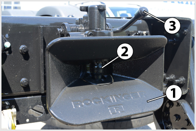
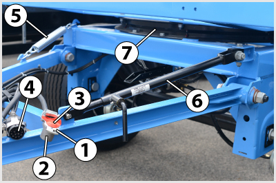

- 466. A kormányszerkezet megfelelő holtjátéka... #704405
- a kormánykerék kerületén mérhető.
- a kormányzott kerekeken mérhető.
- a kormánykeréken és a kormányzott kerekeken meghatározott értékek összege.
- a kormányrudazatban mérhető.
- 467. Ellenőriznie kell-e a gépjárművezetőnek - jogszabály szerint - a kötelezően előírt világító-, illetve jelzőberendezések állapotát és működését? #704420
- Igen, a napi első elindulás előtt kötelező ezt megtenni.
- Nem kötelező, de célszerű.
- 468. Megengedhető-e hosszirányú holtjáték a pótkocsi vonófejénél? #704449
- Nem engedhető meg (a pótkocsi leszakadásának veszélye miatt). Ha előfordul, akkor azt azonnal meg kell szüntetni!
- Igen, erre a vontatásnál fellépő lengések csillapítása miatt van szükség.
- Igen, ez a szerelvény fékezése miatt fontos.
- Igen, ha ennek mértéke nem haladja meg a 40-50 mm-t.
- 469. Milyen karbantartási műveleteket kell végezni a nyerges szerelvény kapcsolószerkezetén? #704461
- Legalább hetente egyszer le kell kapcsolni a pótkocsit, a nyeregszerkezet felfekvő felületeit és a királycsapot meg kell tisztítani és be kell zsírozni.
- Legalább hetente egyszer le kell mosni oldószeres vízzel a nyeregszerkezetet.
- Legalább hetente egyszer le kell kapcsolni a pótkocsit, és a nyeregszerkezetet nagynyomású vízsugárral le kell mosni.
- 470. Hatással van-e a téli, hideg időjárás a gázolaj használhatóságára? #704489
- Igen, a paraffin nagy hidegben kiválhat, emiatt a szűrők is eltömődhetnek.
- Nem, mert ez csak egészen extrém időjárási viszonyok mellett fordulhatna elő.
- Igen, mert a gázolaj befagy a rendszerbe.
- Igen, mert egy bizonyos hőmérséklet alatt a gázolaj már nem éghető anyag.
- 471. Tovább közlekedhet-e gépjárművével, ha a hidraulikus kormányszervóban megszűnt az olajnyomás, de a hidraulikaolaj nem folyt el? #704517
- Igen, a legközelebbi javítóműhelyig közlekedhet.
- Igen, hiszen a kormányszerkezet ilyenkor is üzemképes.
- Nem, a hibát azonnal el kell hárítani, vagy a gépkocsit el kell vontatni.
- Igen, de ajánlatos csökkentett sebességgel közlekedni.
- 472. Gépjárművének generátora nem tölti az akkumulátort. Közlekedhet-e tovább a gépkocsijával? #704518
- Igen, azonban célszerű a meghibásodott generátort mielőbb kijavíttatni, mert ellenkező esetben az akkumulátor nagyon rövid idő alatt lemerül.
- Nem, mert a villamos berendezések ilyenkor egyáltalán nem működnek.
- Nem, mert az a villamos rendszer súlyos károsodását okozhatja.
- Igen, mert az akkumulátor hosszú ideig képes önállóan is táplálni a fogyasztókat.
- 473. Kötelező-e a gépkocsi vezetőjének ellenőrizni a kormányberendezést (kormányholtjáték, szervokormány megfelelő működése, rendellenes zajok észlelése)? #704523
- Igen, a napi első elindulást megelőzően minden esetben.
- Nem kötelező, de célszerű.
- Igen, minden kerékcserét követően.
- Igen, hetente legalább egyszer.
- 474. Közlekedhet-e tovább gépjárművével, ha elromlott annak üzemi fékberendezése? #704525
- Nem, mert ez jelentős baleseti kockázattal jár.
- Igen, csökkentett sebességgel, a legközelebbi szakműhelyig.
- Igen, feltéve, hogy a rögzítőfékkel hatásosan lehet fékezni a gépjárművet.
- Igen, ha kétkörös fékberendezés esetén csak az egyik fékkör romlott el.
- 475. Mikor kell ellenőrizni a gépjármű fékberendezését? #704535
- Mindennap, az első elindulás előtt.
- Mielőtt a járművel lakott területen kívüli útszakaszra hajt.
- A fékrendszer megbontásos javítását követően.
- Ha a fékrendszer rendellenes működését tapasztalja.

- 476. A képen látható akkumulátor folyadékszintjét... #704550
- a 2-es jelű zárókupakok eltávolításával lehet ellenőrizni és szükség szerint utántölteni.
- nem kell ellenőrizni.
- a cellafeszültség mérésével lehet ellőrizni.
- a tápfeszültség mérésével lehet ellenőrizni.

- 477. A képen látható csapos vonószerkezet hosszirányú holtjátéka... #704571
- nem megengedett.
- 5-10 mm lehet.
- 10-20 mm lehet.
- 30-50 mm lehet.

- 478. A képen látható gondozásmentes akkumulátor 1-es jelű ’varázsszemének’ zöld színe azt jelenti, hogy... #704582
- az akkumulátor megfelelően fel van töltve.
- a folyadékszintet ellenőrizni kell.
- az akkumulátor nincs megfelelően feltöltve.
- az akkumulátort ki kell cserélni.
- 479. Milyen karbantartást igényel a forgózsámolyos pótkocsi forgózsámolya? #704851
- A zsámoly környékét meg kell tisztítani és a zsírzógombo(ko)n keresztül meg kell zsírozni.
- A zsámolyban az olajszintet nívócsavarral ellenőrizni kell és hiány esetén hidraulikaolajjal után kell tölteni.
- A zsámoly olajtartályában az előírt olajszintet ellenőrizni kell és hiány esetén hajtóműolajjal után kell tölteni.
- A zsámolyt rendszeresen szét kell szerelni és mosással kell tisztítani.
- 480. Általában milyen színüek az üzemzavarra utaló, a megváltozott menettulajdonságokra figyelmeztető és a működésről tájékoztató visszajelző lámpák? #704947
- Piros, sárga, zöld.
- Kék, zöld, sárga.
- Piros, kék, sárga.
- Piros, fehér, zöld.

- 481. Mi a gépjárművezető teendője, ha a jármű üzemeltetése során azt tapasztalja, hogy felgyullad a képen látható piros színű figyelmeztető lámpa, amely az alacsony motorolaj nyomásra utal? #704949
- Meg kell állnia a járművel és le kell állítania a motort, majd ellenőriznie a motorolaj szintet. Csak akkor haladhat tovább a járművel, ha a megfelelő olajnyomás az olaj utántöltésével, vagy szükség szerinti javításával helyreállítható.
- Továbbhaladhat az első javítóműhelyig, ahol meg kell javíttatni a gépjárművet.
- Továbbhaladhat, ha a lámpa magas motorfordulatszámon elalszik.
- Továbbhaladhat, ha ellenőrizte a motorolaj szintjét és azt rendben találta.
- 482. Mi a gépjárművezető teendője, ha a légfékes jármű üzemeltetése során azt tapasztalja, hogy csökken a levegő nyomása a légtartályokban és kigyullad az erre figyelmeztető lámpa is? #704950
- A járművel meg kell állnia és csak a hiba elhárítása után haladhat tovább.
- Az első javítóműhelyig csökkentett sebességgel továbbhaladhat.
- Továbbhaladhat, mert akkor is tud fékezni a rögzítőfékkel, ha kiürül a légtartály.
- Továbbhaladhat, ha a jármű rögzítőfékje képes az előírt biztonsági fékhatás kifejtésére.
- 483. Részt vehet-e gépkocsijával a közúti forgalomban, ha a kormányberendezésének a kormánykeréken - az elfordulás szögében - mért holtjátéka a 20 fokot jelentősen túllépi? #714547
- Nem, mert ezzel már veszélyezteti a közlekedésbiztonságot.
- Igen, de a kormányberendezést mielőbb alaposan át kell vizsgálni.
- Igen, mert ez a holtjáték még megengedhető.
- Igen, de csak csökkentett sebességgel közlekedhet.
- 484. Meg kell-e tisztítani a gumiabroncsot a felületére került ásványolaj-termékektől? #714550
- Igen, mert károsítják a gumiabroncs anyagát.
- Nem, mert nincs káros hatásuk a gumiabroncs anyagára.
- 485. A hagyományos (gondozást igénylő) akkumulátorban milyen folyadékszint ítélhető megfelelőnek? #714551
- Amikor a folyadék szintje az akkumulátor lemezeit 10-15 mm-rel ellepi.
- Amikor a folyadékszint eléri a beöntőnyílás felső peremét.
- Ha a folyadék szintje éppen az akkumulátor lemezeinek felső széléig ér.
- Ha a folyadék szintje éppen az akkumulátor lemezeinek alsó széléig ér.
- 486. A járművek alvázmosása... #714552
- akár nagynyomású vízsugárral, géppel vagy kézi eszközökkel is végezhető.
- kisnyomású vízsugárral, kézzel végezhető.
- kisnyomású vízsugárral, géppel végezhető.
- nagynyomású vízsugárral, de csak kézzel végezhető.
- 487. Ha lecsökken a hagyományos akkumulátor folyadékszintje, milyen folyadékkal végezhető az utántöltése? #714553
- Tiszta desztillált vagy ioncserélt vízzel.
- Tömény sósavval.
- Csapvízzel.
- Tömény kénsavval.
- 488. Hogyan lehet a motorolajszintet ellenőrizni a motorban? #714554
- Az olajteknőbe benyúló nívópálcával.
- Az olajteknő oldalán elhelyezett szintjelző csavar kicsavarásával.
- Az olajszűrőn elhelyezett vizsgálóablakban.
- Csak szakszervizben tudják ellenőrizni a megfelelő műszerrel.
- 489. Mikor kell fékpróbát végzenie a járműszerelvényével? #714556
- A pótkocsi felkapcsolását követően, illetve a napi első elindulás előtt.
- Amikor hosszú lejtő elejére ér.
- Minden elindulás előtt és azt követően legalább óránként egyszer.
- Ha a fékrendszer működésében rendellenességet tapasztal.
- 490. Amikor a generátor megfelelően tölti az akkumulátort, akkor a műszerfalon elhelyezett ellenőrző lámpa... #714557
- egyáltalán nem világít.
- folyamatos vörös fénnyel világít.
- vörösen villog.
- folyamatos sárga fénnyel világít.
- 491. Milyen módon tölthető a lemerült akkumulátor? #714558
- Egyenárammal úgy, hogy a töltőáram erőssége ne haladja meg az akkumulátor névleges kapacitásának 1/10-ét.
- 220 V-os hálózati feszültségű váltakozó árammal.
- Egyenárammal úgy, hogy a töltőáram erőssége érje el az akkumulátor névleges kapacitásának 50%-át.
- Egyenárammal úgy, hogy a töltőáram erőssége ne haladja meg az akkumulátor névleges kapacitásának számértékét.
- 492. Alvázmosás után szükséges-e a jármű fékhatását ellenőrizni? #714560
- Igen, mert a kerékfékszerkezetekbe bejutó víz átmenetileg érezhetően csökkentheti a fékhatást.
- Nem, mert a a kerékfékekbe jutó víz nem befolyásolja a fékhatást.
- Nem, mert a kerékfékek teljesen tömítettek, nem juthat a belsejükbe víz.
- Csak télen, mert hideg időben nehezebben párolog el a kerékfékszerkezetekbe bejutó víz.
- 493. A képen látható 1-es jelű akkumulátorokba a 2-es jelű zárókupakok eltávolítása után az előírt folyadékszintig szükség szerint... #714566
- desztillált vizet kell tölteni.
- kénsavat kell tölteni.
- csapvizet kell tölteni.
- sósavat kell tölteni.

- 494. Milyen karbantartást igényel a képen látható 7-es jelű forgózsámoly? #714571
- Rendszeres külső tisztítást és zsírkenést.
- Rendszeres szétszerelést és mosással történő tisztítást.
- Nem igényel karbantartást.
- Olajszint-ellenőrzést és szükség szerinti utántöltést.

- 495. Mire figyelmeztet a képen a bekeretezett visszajelző lámpa? #714575
- A fékrendszerrel kapcsolatos hibára vagy rendellenességre.
- A sebességváltóval kapcsolatos hibára, vagy rendellenességre.
- A differenciálművel kapcsolatos hibára, vagy rendellenességre.
- A differenciálzár bekapcsolt állapotára.
- 496. Tovább közlekedhet-e járművével (járműszerelvényével), ha menet közben kigyullad a képen bekeretezett visszajelző lámpa? #714576
- Nem.
- Igen.
- Igen, csökkentett sebességgel.
- Igen, a legközelebbi szakműhelyig.
- 497. Korszerű, zárt rendszerű, gondozásmentes akkumulátornál az állapotjelző (varázsszem) milyen színnel jelzi a töltött és töltetlen állapotot? #714579
- A töltött állapotot zöld, a töltetlen állapotot fekete színnel jelzi.
- A töltött állapotot sárga, a töltetlen állapotot fekete színnel jelzi.
- A töltött állapotot kék, a töltetlen állapotot piros színnel jelzi.
- A töltött állapotot piros, a töltetlen állapotot kék színnel jelzi.
- 498. Az egytárcsás, száraz súrlódású, hidraulikus működtetésű tengelykapcsoló folyadéktartályába a szint csökkenése esetén milyen folyadékot szabad utántölteni? #714580
- Fékfolyadékot.
- Hidraulika olajat.
- Tengelykapcsoló olajat.
- Fagyálló folyadékot.
- 499. Hogyan akadályozzák meg, hogy szennyeződés juthasson be a sűrített levegős átmenő fékrendszer kapcsolófejeibe? #714584
- A kapcsolófejeket elfordítható védőfedéllel látják el.
- A használaton kívüli kapcsolófejek leszerelhetőek.
- A zsírzószemen keresztül hetente meg kell zsírozni őket.
- A használaton kívüli kapcsolófejekre fóliazsákot kell húzni.
- 500. Mikor kötelező ellenőrizni, illetve szükség szerint utánhúzni a jármű kerekeit rögzítő csavarokat? #721115
- Az időszakos karbantartások során, illetve kerékcserét követően.
- Erre egyáltalán nincs szükség.
- Minden nap, az első elindulás előtt.
- Heti rendszerességgel.
- 501. Milyen sűrűn kell ellenőrizni a hagyományos ólomakkumulátor folyadékszintjét? #721117
- Nyáron kéthetente, télen havonta.
- Évente egyszer.
- Naponta.
- Félévente.
- 502. A járművek felső mosása... #721118
- kisnyomású vízsugárral, géppel vagy kézzel történhet.
- csak kézzel végezhető.
- csak nagynyomású vízsugárral végezhető.
- csak géppel végezhető.
- 503. Mi a teendő, amikor az alvázmosás után lecsökken a fékhatás? #721121
- A vizet lassú haladás közben, gyengén fékezve el kell párologtatni a kerékfékszerkezetekből.
- Meleg levegőt kell fúvatni a kerékfékekre, hogy a víz elpárologhasson belőlük.
- Addig nem lehet elindulni, amíg a víz el nem párolog a kerékfékekből.
- A járművet az üzemi fékkel és a rögzítőfékkel együtt kell fékezni addig, amíg a fékhatás újra eléri a szokásos értéket.
- 504. Helytelen mellső futómű-beállítás esetén... #721123
- a gépjármű kormányozhatósága és stabilitása romlik, a gumiabroncskopás megnő, illetve rendellenessé válik.
- a gépjármű felfüggesztésének alkatrészei károsodhatnak.
- megnövekszik a gépjármű kormányberendezésének a holtjátéka.
- nagymértékben növekszik a gépjármű tüzelőanyagfogyasztása.
- 505. Milyen ellenőrzési és karbantartási műveleteket kell a pótkocsi vonófején végezni? #721125
- Naponta kell ellenőrizni a vonófej hosszirányú holtjátékát, hetente kell megtisztítani és zsírozni, valamint ellenőrizni a csavarkötéseit.
- Legalább havonta meg kell tisztítani és be kell zsírozni.
- Naponta kell ellenőrizni, hogy a vonófejen tapasztalható-e az előírt hosszirányú holtjáték. Ha nem, akkor el kell végezni az utánállítást.
- Nem igényel különösebb karbantartást és ellenőrzést.

- 506. A képen látható tehergépkocsi műszerfalon a 2-es jelű lámpa azt jelzi, hogy... #721127
- a mellette lévő nyomásmérő az egyes fékkör tartálynyomását mutatja.
- az egyes fékkör légnyomása nem éri el a minimálisan szükséges értéket.
- az egyes fékkör légnyomása eléri a minimálisan szükséges értéket.
- az egyes fékkör légnyomása meghaladja a minimálisan szükséges értéket.
- 507. A képen látható gondozásmentes akkumulátor 1-es jelű ’varázsszemének’ fekete színe azt jelenti, hogy... #721128
- az akkumulátor nincs megfelelően feltöltve.
- a folyadékszintet ellenőrizni kell.
- az akkumulátor megfelelően fel van töltve.
- az akkumulátort ki kell cserélni.
- 508. A képen látható gondozásmentes akkumulátor 1-es jelű ’varázsszemének’ fehér színe azt jelenti, hogy... #721129
- az akkumulátort ki kell cserélni.
- a folyadékszintet ellenőrizni kell.
- az akkumulátor megfelelően fel van töltve.
- az akkumulátor nincs megfelelően feltöltve.

- 509. Ha a képen látható 6-os jelű visszajelző lámpa járó motor esetén felgyullad, akkor... #721132
- a gépjármű generátora nem tölti az akkumulátor(oka)t, így az elektromos fogyasztók biztonságos működése már csak rövid időre biztosított. Ezért a hibát a lehető legrövidebb időn belül el kell hárítani.
- a gépjármű generátora nem tölti az akkumulátor(ok)at, így az elektromos fogyasztók biztonságos működése nem biztosított. Ezért a járművel azonnal meg kell állni, és a hibát el kell hárítani.
- a villamos hálózat tápfeszültsége a névleges szint alá csökkent. Ha ez az állapot hosszabb ideig fennáll, akkor a járművet szervizbe kell vinni, mert előfordulhat, hogy a generátor nem tölti megfelelően az akkumulátor(oka)t.
- 510. Hogyan célszerű végrehajtani a jármű alsó mosását? #721133
- Nagy nyomással, erős vízsugárral, kézzel vagy géppel.
- Kis nyomással, gyenge vízsugárral, kézzel.
- Kis nyomású, gyenge vízsugárral.
- Nagy nyomással, erős vízsugárral, kézzel.
- 511. Ha menet közben a gépjárművezető azt tapasztalja, hogy jelentősen megnőtt a kormányholtjáték, akkor tovább közlekedhet-e a járművel az első javítóműhelyig? #721134
- Nem, mert ez balesetveszélyes.
- Igen, de csak fokozott óvatossággal, csökkentett sebességgel.
- 512. A lemerült akkumulátort normál töltésnél mekkora töltőárammal kell tölteni? #721137
- A töltőáram erőssége (Amperben) az akkumulátor kapacitásának 1/10 része.
- A töltőáram erőssége (Amperben) az akkumulátor kapacitásának 1/100 része.
- A töltőáram erőssége (Amperben) megegyezik az akkumulátor kapacitásával.
- A töltőáram erőssége (Amperben) megegyezik az akkumulátor kapacitásának tízszeresével.
- 513. A karbantartást igénylő akkumulátort milyen folyadékkal kell utántölteni, ha lecsökkent a folyadékszintje? #721138
- Desztillált vagy ioncserélt vízzel.
- Kénsav és víz meghatározott keverékével.
- Sósav és víz meghatározott keverékével.
- Csapvízzel.
- 514. Hogyan lehet ellenőrizni üzem közben, hogy a generátor tölti-e az akkumulátort? #721139
- A műszerfalon található feszültségmérő-műszerrel vagy a töltés hiányára figyelmeztető visszajelző lámpával.
- Csak szakszervizben, diagnosztikai műszerrel lehet ellenőrizni a töltés megfelelőségét.
- A fényszóró fényerejéből lehet következtetni a generátor töltőképességére.
- A nem megfelelő töltést jelzi, ha az alárendelt szerepű fogyasztók (belső világítás, rádió stb.) már nem működnek.
- 515. Mit kell a gépjárművezetőnek naponta indulás előtt ellenőriznie a kormányberendezésen? #721141
- A kormányberendezés holtjátékát.
- A kormányrudazat gömbcsuklóit.
- A kormánymű és a kormányrudazatok épségét.
- A kormánykerék körülfordulásainak a számát.
- 516. Hogyan lehet a hidraulikus szervokormány folyadéktartályában ellenőrizni az olajszintet? #721143
- A tartályba nyúló olajszint-ellenőrző pálcával, vagy az áttetsző tartály oldalfalán át, esetleg elektromos visszajelző lámpa segítségével.
- Csak szakszervizben ellenőrizhető.
- Az olajszint-ellenőrző csavar kicsavarásával.
- A szervokormány nem megfelelő működéséből lehet következtetni a túlságosan alacsony olajszintre.
- 517. Milyen olajat szabad a hidraulikus szervokormány tartályába utántölteni? #721144
- Csak a kezelési utasításban meghatározott hajtómű/szervoolajat.
- Csak a kezelési utasításban meghatározott motorolajat.
- Csak a hidraulilkus lengéscsillapítóban használttal azonos olajat.
- Csak a kezelési utasításban meghatározott fékfolyadékot.
- 518. Mikor kell fékpróbát végrehajtani a gépjárművel? #721150
- Közvetlenül a napi első elindulás után.
- Az üzemeltetés során többször is végre kell hajtani, hogy meggyőződhessünk a fék működőképességéről.
- Csak akkor kell végrehajtani, ha a fékszerkezeten előtte karbantartást, beszabályozást vagy javítást végeztek.
- Csak akkor, ha fékredszer hibájára utaló visszajelző lámpa világít.
- 519. A jármű ellenőrzésekor az alábbiak közül mi az, amit csak a motor beindítása után tud a gépjárművezető ellenőrizni? #721151
- Az olajnyomást.
- A hűtőfolyadék megfelelő szintjét.
- A gumiabroncsok állapotát.
- A hidraulikus fékrendszer folyadékszintjét.
- 520. Szükséges-e a járművet tisztán tartani? #721152
- Igen, mert a szennyződések korlátozhatják az előírt jelzések láthatóságát, károsíthatják a védőbevonatokat és korróziót is okozhatnak.
- Nem szükséges, de ajánlott. A tisztításnak csak esztétikai jelentősége van.
- 521. Mekkora holtjáték engedhető meg általában a kormánykerék elfordulási szögében mérve hibátlan kormányberendezés esetén? #724184
- Legfeljebb 5-15 fok.
- Hozzávetőlegesen 15-25 fok.
- Legfeljebb 25-30 fok.
- Legfeljebb 0-1 fok.
- 522. Milyen esetben világít a légfékrendszer piros színű figyelmeztető lámpája? #724185
- Amikor valamelyik üzemi fékkörben a levegőnyomás a minimálisan megengedett érték alá esik.
- Ha a fékbetétek vastagsága a megengedett minimális érték alá csökken.
- Ha a fékrendszer tartályaiban a nyomás meghaladja a maximálisan megengedett értéket.
- Ha a rugóerőtárolós rögzítőfék körben a levegőnyomás a minimálisan megengedett érték alá esik.

- 523. Mire figyelmeztet a képen a bekeretezett visszajelző lámpa? #724186
- Ha pirosan világít, vagy villog, az olyan hibára, rendellenességre utal, amelyet haladéktalanul el kell hárítani és ehhez a járművel általában meg is kell állni.
- Ezt a lámpát kizárólag az ütközés veszélyére történő figyelmeztetésre használják.
- A jármű veszélyes helyen áll, ezért ki kell rakni az elakadásjelző háromszöget.
- A vészvillogó bekapcsolt állapotára.
- 524. Hogyan kell végrehajtani a jármű felső mosását? #724190
- Bő vízzel, kis nyomással, kézzel vagy géppel.
- Kevés vízzel, géppel.
- Bő vízzel, erős nagynyomású vízsugárral, kézzel.
- Bő vízzel, erős nagynyomású vízsugárral, géppel.